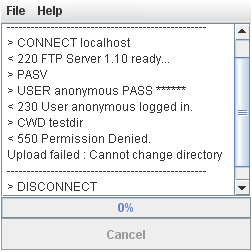

| Level 1: Display Java Console |
| Java runtime comes with a Java console. It might be disabled on standard configuration. You or your customer can enable it to get more info about applet and upload. Under Windows:
Start -> Settings -> Control Panel -> Java -> Advanced Tab -> Show console -> Apply
Under MacOSX: Applications -> Utilities -> Java -> Last tab -> Show console -> Save
Notice: Do not enable any option in "Debugging" section.
To make sure the browser will load the latest version of applet you should clean both browser cache and Java cache: Start -> Settings -> Control Panel -> Java -> General tab -> Temporary Internet Files -> Settings -> Delete files. Then close all browser windows and reload the applet. The Java console should pop-up starting with the JRE version:
Notice that Java settings are also available under MacOSX and Linux. Menu and tabs might not be exactly the same but you should find the same features about console and temporary files.
|
| Level 2: Enable debug mode |
If traces in Java console (level 1 above) are not enough then you could ask the applet to dump more details. To do so, add the following parameter:
<PARAM NAME="verbosemode" VALUE="debug">
Close all browser windows and reload the applet. When opening the Java console you will see more details about upload process. It should help to understand what's wrong especially for HTTP upload.
You can get more traces with:
<PARAM NAME="verbosemode" VALUE="trace">
but it will really slow down the applet as it will dump upload content.
If you're still lost then contact support team with the traces from the Java console.
|
| FTP verbose mode |
JFileUpload allows to display each FTP command. It is not related to the Java console but it's another way to figure out issues with FTP upload. To enable FTP verbose mode, you have to setup "resources" parameter: <PARAM NAME="resources" VALUE="i18n">
and install i18n.properties file (available in documentation/tutorials folder) in the same directory as JFileUpload HTML/JavaScript.
Modify i18n.properties to uncomment (remove the starting # char) the following lines:
#taskoutput.protocol=enabled
#taskoutput.protocol.request=> {0}
#taskoutput.protocol.response=< {0}
Then close all browser windows and reload the applet. Try to upload a file and you will see FTP commands detail. Most FTP problems come from wrong username/password or permissions to write file or change directory when using account extra parameter. |
 |
|
| Unexpected HTTP requests |
JFileUpload sends HTTP request to load commons-logging.properties to support level 2 debug mode. This file is not available by default so you might notice some 404 errors in your web server log or error file:
HEAD /commons-logging.properties HTTP/1.1 404 0
GET /org/apache/commons/logging/impl/Log4JLogger.class HTTP/1.1 404 371
If you want to avoid such 404, then you can install both commons-logging.properties and simplelog.properties into the same directory as JFileUpload HTML/JavaScript. And to not enable debug mode, just search/replace "debug" string by "info" in simplelog.properties. You can also simply create both files as empty files.
Similar HTTP requests are sent to support internationalization when localeresources=true:
GET /jfileupload/transfer/client/util/resources.class HTTP/1.1 404 367
GET /jfileupload/transfer/client/util/resources_en.class HTTP/1.1 404 370
GET /jfileupload/transfer/client/util/resources_en.properties HTTP/1.1 404 375
GET /jfileupload/transfer/client/util/resources_en_US.class HTTP/1.1 404 373
GET /jfileupload/transfer/client/util/resources_en_US.properties HTTP/1.1 404 378
Again if you want to avoid such 404 errors then you can create the directory structure above with one empty file for each. However, it could be pain because there are a lot of countries so a lot of files to create. Another workaround to avoid such requests is to disable internationalization based on locale (default behavior) by adding the following parameter:
<PARAM NAME="localeresources" VALUE="false">
|
| |